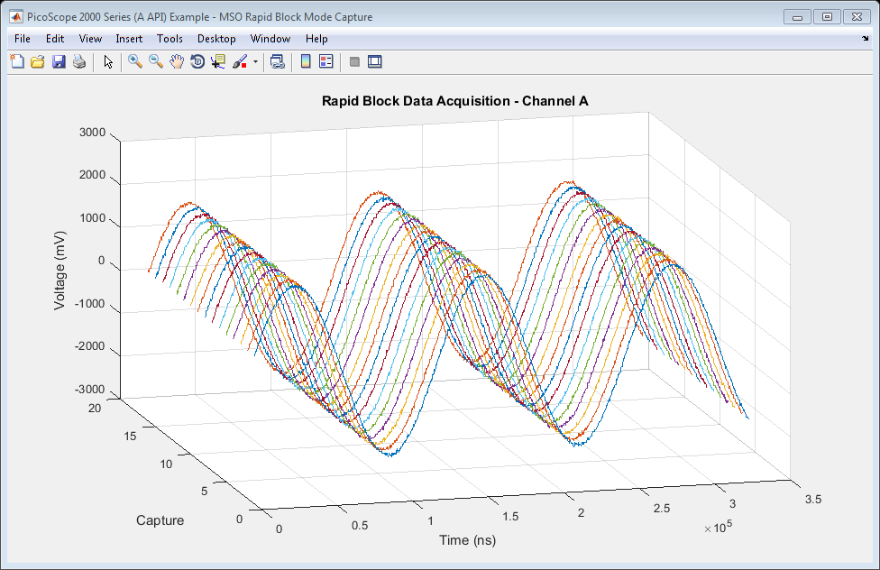
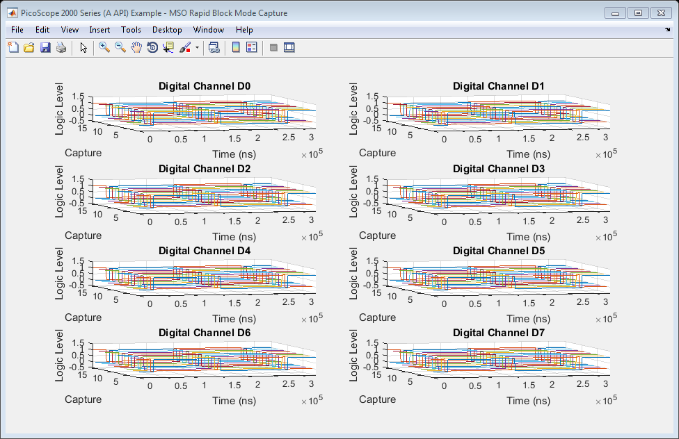

PicoScope 2000 Series (A API) Instrument Driver Mixed Signal Oscilloscope Rapid Block Data Capture Example
This is an example of an instrument control session using a device object. The instrument control session comprises all the steps you are likely to take when communicating with your instrument.
These steps are:
- Create a device object
- Connect to the instrument
- Configure properties
- Invoke functions
- Disconnect from the instrument
To run the instrument control session, type the name of the file, PS2000A_ID_MSO_Rapid_Block_Plot3D_Example, at the MATLAB command prompt.
The file, PS2000A_ID_MSO_RAPID_BLOCK_PLOT3D_EXAMPLE.M must be on your MATLAB PATH. For additional information on setting your MATLAB PATH, type 'help addpath' at the MATLAB command prompt.
Example: PS2000A_ID_MSO_Rapid_Block_Plot3D_Example;
Description: Demonstrates how to set properties and call functions in order to capture rapid block data from a PicoScope 2000 Series Mixed Signal Oscilloscope using the underlying 'A' API library functions.
Copyright: © 2015 - 2017 Pico Technology Ltd. All rights reserved.
Contents
- Suggested Input Test Signals
- Clear Command Window and Close any Figures
- Load Configuration Information
- Device Connection
- Set Analogue Channels and Digital Ports
- Set Memory Segments
- Verify Timebase Index and Maximum Number of Samples
- Set Simple Trigger
- Setup Rapid Block Parameters and Capture Data
- Process data
- Disconnect Device
Suggested Input Test Signals
This example was published using the following test signal:
- Channel A: 4 Vpp, 8 kHz Sine wave
- PORT0 : 4 Vpp, 4 kHz Square wave (applied to all channels).
Clear Command Window and Close any Figures
clc;
close all;
Load Configuration Information
PS2000aConfig;
Device Connection
% Check if an Instrument session using the device object 'ps2000aDeviceObj' % is still open, and if so, disconnect if the User chooses 'Yes' when prompted. if (exist('ps2000aDeviceObj', 'var') && ps2000aDeviceObj.isvalid && strcmp(ps2000aDeviceObj.status, 'open')) openDevice = questionDialog(['Device object ps2000aDeviceObj has an open connection. ' ... 'Do you wish to close the connection and continue?'], ... 'Device Object Connection Open'); if (openDevice == PicoConstants.TRUE) % Close connection to device disconnect(ps2000aDeviceObj); delete(ps2000aDeviceObj); else % Exit script if User return; end end % Create a device object. % The serial number can be specified as a second input parameter. ps2000aDeviceObj = icdevice('picotech_ps2000a_generic.mdd'); % Connect device object to hardware. connect(ps2000aDeviceObj);
Copyright © 2014 - 2017 Pico Technology Ltd. All rights reserved.
PicoScope 2000 Series (A API) MATLAB Instrument Driver
Number of units found: 1
Serial number(s): GS002/0021
Opening PicoScope 2000 Series device...
Instrument Device Object Using Driver : picotech_ps2000a_generic.mdd
Instrument Information
Type: Oscilloscope
Manufacturer: Pico Technology Ltd.
Model: PicoScope 2000 Series (A API)
Driver Information
DriverType: MATLAB generic
DriverName: picotech_ps2000a_generic.mdd
DriverVersion: 1.2.26
Communication State
Status: open
Setting Device Parameters...
Default Analog Channel Setup:-
------------------------------
Channel A:-
Enabled: True
Coupling: DC
Range: +/- 5 V
Analog Offset: 0.0 V
Channel B:-
Enabled: True
Coupling: DC
Range: +/- 5 V
Analog Offset: 0.0 V
Default Digital Port Setup:-
----------------------------
PORT0:-
Enabled: True
Logic Level: +1.5 V
PORT1:-
Enabled: True
Logic Level: +1.5 V
Turning off Equivalent Time Sampling...
Turning off trigger...
Default Block mode parameters:-
Timebase index : 64
Time Interval: 496.0 ns
Number of pre-trigger samples: 0
Number of post-trigger samples: 8192
Total number of samples: 8192
Default Streaming mode parameters:-
Streaming interval: 1.00e-06 s
Streaming auto stop: 1
Default Signal generator parameters:-
Start frequency: 1000 Hz
Stop frequency: 1000 Hz
Offset voltage: 0 mV
Peak to Peak voltage: 2000 mV
Initialisation complete.
Connected to PicoScope 2000 Series device:-
Instrument Model: 2207BMSO
Batch/Serial Number: GS002/0021
Analog Channels: 2
Digital Channels: 16
Bandwidth: 100 MHz
Buffer memory: 64 MS
Maximum sampling rate: 1 GS/s
Signal Generator Type: Arbitrary Waveform Generator
Set Analogue Channels and Digital Ports
Default driver settings applied to channels are listed below - use the Instrument Driver's ps2000aSetChannel function to turn channels on or off and set voltage ranges, coupling, as well as analogue offset.
% In this example, data is only collected only on Channel A and Digital % PORT0 (D0 - D7) using default settings, while Channel B and Digital PORT1 % are switched off. % Channel : 1 (ps2000aEnuminfo.enPS2000AChannel.PS2000A_CHANNEL_B) % Enabled : 0 (Off - PicoConstants.FALSE) % Type : 1 (ps2000aEnuminfo.enPS2000ACoupling.PS2000A_DC) % Range : 8 (ps2000aEnuminfo.enPS2000ARange.PS2000A_5V) % Analogue Offset: 0.0 V % Execute device object function(s). [status.setChB] = invoke(ps2000aDeviceObj, 'ps2000aSetChannel', 1, 0, 0, 8, 0.0);
Use the ps2000aSetDigitalPort function to enable/disable digital ports and set the logic level threshold. This function is located in the Instrument Driver's Digital Group. Enabling a digital port will enable all channels on that port, while setting the enabled parameter to 0 will turn off all digital channels on that port.
digitalObj = get(ps2000aDeviceObj,'Digital'); % Digital Port : 128 (ps2000aEnuminfo.enPS2000ADigitalPort.PS2000A_DIGITAL_PORT0) % Enabled : 1 (On - PicoConstants.TRUE) % Logic Level : 1.5 V status.setDPort0 = invoke(digitalObj, 'ps2000aSetDigitalPort', ps2000aEnuminfo.enPS2000ADigitalPort.PS2000A_DIGITAL_PORT0, 1, 1.5); % Digital Port : 129 (ps2000aEnuminfo.enPS2000ADigitalPort.PS2000A_DIGITAL_PORT1) % Enabled : 0 (Off - PicoConstants.FALSE) % Logic Level : 0 V status.setDPort1 = invoke(digitalObj, 'ps2000aSetDigitalPort', ps2000aEnuminfo.enPS2000ADigitalPort.PS2000A_DIGITAL_PORT1, 0, 0);
Set Memory Segments
Configure number of memory segments, ideally a power of 2, query ps2000aGetMaxSegments to find the maximum number of segments for the device.
% nSegments : 16 [status.memorySegments, nMaxSamples] = invoke(ps2000aDeviceObj, 'ps2000aMemorySegments', 16); % Set number of samples to collect pre- and post-trigger. Ensure that the % total does not exceeed nMaxSamples above. set(ps2000aDeviceObj, 'numPreTriggerSamples', 0); set(ps2000aDeviceObj, 'numPostTriggerSamples', 1024);
Verify Timebase Index and Maximum Number of Samples
Use the ps2000aGetTimebase2 function to query the driver as to the suitability of using a particular timebase index and the maximum number of samples available in the segment selected, then set the 'timebase' property if required.
To use the fastest sampling interval possible, enable one analogue channel and turn off all other channels.
Use a while loop to query the function until the status indicates that a valid timebase index has been selected. In this example, the timebase index of 42 is valid.
% Initial call to ps2000aGetTimebase2 with parameters: % % timebase : 42 (420 ns for a PicoScope 2205 MSO) % segment index : 0 status.getTimebase2 = PicoStatus.PICO_INVALID_TIMEBASE; timebaseIndex = 42; while (status.getTimebase2 == PicoStatus.PICO_INVALID_TIMEBASE) [status.getTimebase2, timeIntNs, maxSamples] = invoke(ps2000aDeviceObj, 'ps2000aGetTimebase2', timebaseIndex, 0); if (status.getTimebase2 == PicoStatus.PICO_OK) break; else timebaseIndex = timebaseIndex + 1; end end % Configure the device 'timebase' property value. set(ps2000aDeviceObj, 'timebase', timebaseIndex);
Set Simple Trigger
Set a trigger on Channel A, with an auto timeout - the default value for trigger delay is used. The trigger will wait for a rising edge through the specified threshold unless the timeout occurs first.
% Trigger properties and functions are located in the Instrument % Driver's Trigger group. triggerGroupObj = get(ps2000aDeviceObj, 'Trigger'); triggerGroupObj = triggerGroupObj(1); % Set the autoTriggerMs property in order to automatically trigger the % oscilloscope after 1 second if a trigger event has not occurred. Set to 0 % to wait indefinitely for a trigger event. set(triggerGroupObj, 'autoTriggerMs', 1000); % Channel : 0 (ps2000aEnuminfo.enPS2000AChannel.PS2000A_CHANNEL_A) % Threshold : 500 mV % Direction : 2 (ps2000aEnuminfo.enPS2000AThresholdDirection.PS2000A_RISING) [status.setSimpleTrigger] = invoke(triggerGroupObj, 'setSimpleTrigger', 0, 500, 2);
Setup Rapid Block Parameters and Capture Data
Capture a set of data using rapid block mode and retrieve data values for Channel A.
% Rapid Block specific properties and functions are located in the % Instrument Driver's Rapidblock group. rapidBlockGroupObj = get(ps2000aDeviceObj, 'Rapidblock'); rapidBlockGroupObj = rapidBlockGroupObj(1); % Set the number of waveforms to captures % nCaptures : 16 numCaptures = 16; [status.setNoOfCaptures] = invoke(rapidBlockGroupObj, 'ps2000aSetNoOfCaptures', numCaptures); % Block specific properties and functions are located in the Instrument % Driver's Block group. blockGroupObj = get(ps2000aDeviceObj, 'Block'); blockGroupObj = blockGroupObj(1);
This example uses the runBlock function in order to collect a block of data - if other code needs to be executed while waiting for the device to indicate that it is ready, use the ps2000aRunBlock function and poll the ps2000aIsReady function until the device indicates that it has data available for retrieval.
% Capture the blocks of data: % segmentIndex : 0 [status.runBlock, timeIndisposedMs] = invoke(blockGroupObj, 'runBlock', 0); % Retrieve Rapid Block Data: downsamplingRatio = 1; downsamplingRatioMode = ps2000aEnuminfo.enPS2000ARatioMode.PS2000A_RATIO_MODE_NONE; % Provide additional output arguments for the remaining channels e.g. chB % for Channel B, dPort1 for Digital PORT1. [numSamples, overflow, chA, ~, ~, ~, dPort0, ~] = invoke(rapidBlockGroupObj, 'getRapidBlockData', numCaptures, ... downsamplingRatio, downsamplingRatioMode); % Stop the device. [status.stop] = invoke(ps2000aDeviceObj, 'ps2000aStop');
runBlock:- Collecting block of data: Timebase: 42 Pre-trigger samples: 0 Post-trigger samples: 1024 runBlock: Waiting for device to become ready... runBlock: Device ready. getRapidBlockData: Retrieving data... getRapidBlockData: Retrieving digital port data and assigning to port array. getRapidBlockData: Converting analog channels to millivolts and assigning to channel array. getRapidBlockData: Data succesfully retrieved.
Process data
Plot data values in 3D showing history.
Calculate the time period over which samples were taken for each waveform. Use the timeIntNs output from the ps2000aGetTimebase2 function or calculate the sampling interval using the main Programmer's Guide.
timeNs = double(timeIntNs) * downsamplingRatio * double(0:numSamples - 1);
Analogue Data
% Channel A figure1 = figure('Name','PicoScope 2000 Series (A API) Example - MSO Rapid Block Mode Capture', ... 'NumberTitle', 'off', 'Position', [scrsz(3)/2 + 1 scrsz(4)/4 scrsz(3)/2 scrsz(4)/2]); movegui(figure1, 'west'); view([-15 24]); grid on; hold all; for i = 1:numCaptures plot3(timeNs, i * (ones(numSamples, 1)), chA(:, i)); end title('Rapid Block Data Acquisition - Channel A'); xlabel('Time (ns)'); ylabel('Capture'); zlabel('Voltage (mV)'); hold off;
Digital Data
figure2 = figure('Name','PicoScope 2000 Series (A API) Example - MSO Rapid Block Mode Capture', ... 'NumberTitle', 'off', 'Position', [scrsz(3)/2 + 1 scrsz(4)/4 scrsz(3)/2 scrsz(4)/2]); movegui(figure2, 'east'); disp('Converting digital integer data to binary...'); % Create 3D array to hold binary data values for each channel/segment % combination. dPort0Binary = zeros(numSamples, 8, 16); for segment = 1:numCaptures % Retrieve the bit values from the lower 8 bits of the 16-bit values % returned for dPort0 - each bit corresponds to a digital channel. Channel % D0 data will be in column 8 and D7 data will be in column 1. for sample = 1:numSamples dPort0Binary(sample, :, segment) = bitget(dPort0(sample, segment), 8:-1:1, 'int16'); end end hold on; for i = 1:8 subplot(4, 2, i); hold on; for segment = 1:numCaptures plot3(timeNs, segment * (ones(numSamples, 1)), dPort0Binary(:,(8 - (i - 1)), segment)); end title(strcat('Digital Channel D', num2str(i - 1))); xlabel('Time (ns)'); ylabel('Capture'); zlabel('Logic Level'); axis([-inf, inf, -inf, inf, -0.5, 1.5]) view([-15 24]); grid on; end
Converting digital integer data to binary...
Disconnect Device
Disconnect device object from hardware.
disconnect(ps2000aDeviceObj); delete(ps2000aDeviceObj);
Connection to PicoScope 2207BMSO with serial number GS002/0021 closed successfully. Libraries unloaded successfully.